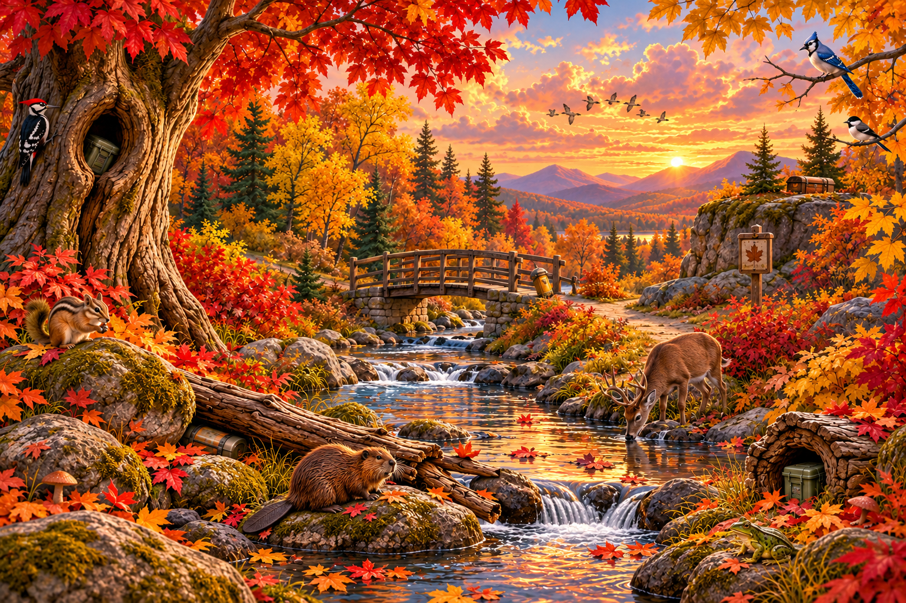
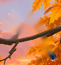
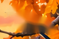
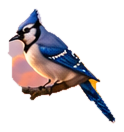
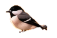
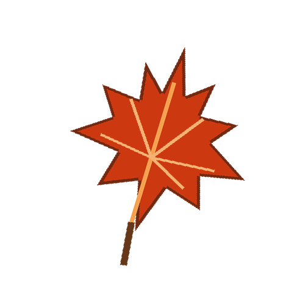

🌙 Another World Awaits
The next forest awaits beyond the page.






♫Beyond the leaves, another secret lies,
Where folded corners veil a second sky.
The forest keeps what curious hands may find:
Peel back its edge and leave this world behind.
A Woodland Whisper
Explore the creatures. A secret sequence unlocks the next layer.
Listen closely, explore the forest, and discover what lies beyond the turning page.